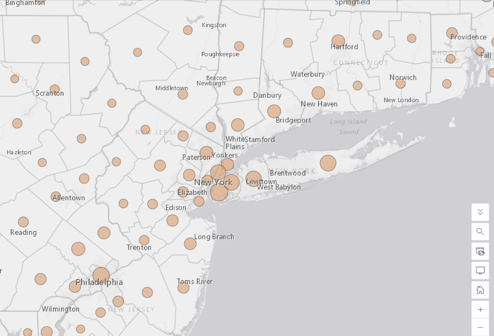

Lab 02 · September 2026
Lab 02
The question
2016 U.S. Presidential Election
Where were different vote-share patterns concentrated across U.S. counties in 2016, and how does the pattern change when the same election data is represented using different mapping techniques?
The data
2016 U.S. Presidential Election
I used the election_2016 layer provided for the lab in ArcGIS Online. The dataset contains 3,139 county records. I found several data-quality problems. The DEM_votes field is empty, while votes_DEM contains the Democratic vote counts. The fields displayed as % DEM and % GOP contain proportions rather than percentage-point values, so a value such as 0.71 represents about 71%. Alaska also appears in 28 rows with identical statewide election values, meaning that simply summing the rows would count Alaska repeatedly. Even after accounting for the Alaska duplication, the totals in the layer do not reconcile with the certified national results.
Cartogram Data
For the cartogram, I used the LAB02_state-votes-2016.csv file supplied with the lab. It was created by aggregating the election_2016 data to the state level. The repeated Alaska values were corrected in this file, but the remaining reconciliation gap was not adjusted. The cartogram uses Votes_total to determine state area and Pct_DEM to represent Democratic vote share.
The method
2016 U.S. Presidential Election
I used four mapping techniques to represent the election data. First, I created a predominant-category map using DEM_per and GOP_per. I also tested classification sensitivity using five classes and compared equal interval, quantile, and natural breaks. Second, I created a proportional-symbol map using Total_Votes to control symbol size. Third, I calculated standardized Democratic vote-share scores using the mean of 0.3174 and standard deviation of 0.1527. These z-scores are relative to the average across all counties in the election_2016 layer, and I used z = 0 as the midpoint of the diverging color scale. Finally, I created a state-level cartogram in go-cart.io, using Votes_total to determine state area and Pct_DEM to represent Democratic vote share.
Maps


What I found
2016 U.S. Presidential Election
I found that the same election data can look very different depending on the mapping method. The county-level map also showed that geographic coverage and voting volume are not the same thing: a large number of counties or a large amount of land does not necessarily represent a similarly large number of votes. The classification test showed that quantile placed 642 counties in the highest class, while equal interval placed only 43 counties there and natural breaks placed 198. This changed how geographically widespread the highest Democratic vote shares appeared. The proportional-symbol map made voting volume more visible, while the z-score map showed how each county differed from the average county. The cartogram emphasized states with more total votes by increasing their area.
What this does not show
2016 U.S. Presidential Election
The maps also do not show the entire electorate. Democratic and Republican vote-share maps do not separately represent third-party voters, and none of these maps shows eligible people who did not vote. Therefore, the maps should not be interpreted as a complete representation of all residents or all political preferences.
The maps are also affected by visualization choices. Different classification methods can make the same vote-share data appear either more widespread or more concentrated. A raw-count map can emphasize places with more voters, while a rate map shows the share of votes instead. Proportional symbols reduce the influence of geographic area but can overlap in densely populated areas. The z-score map shows how counties differ from the average county, not from a 50–50 vote split. Finally, the cartogram changes the geographic size and shape of states in order to emphasize voting volume, so it should not be interpreted as an accurate representation of physical geography.
AI use: I used ChatGPT only to check that the HTML code I wrote and edited was correct, as I have limited experience with coding. I verified the result by opening the published page and checking that everything displayed and worked correctly. The analysis, map settings, and interpretation are my own.
← Back to all labs